Каждый ролик — 40 секунд. Первые 10 секунд хук, сгенерированный в Seedance 2.5 с нашими героями. Следующие 30 секунд — настоящий геймплей, записанный из актуальной версии 1.0.0, с постановочными ракурсами. Все три сценария утверждены, первые версии хуков — ниже.
40 с · 1080×1920 · 30 fps · H.264, ~5 Мбит/с · звук −14 LUFS · RU. На странице превью 720p; полный файл 1080p.
| 0–10 | Хук Seedance 2.5 (480p, увеличен до 1080p в Real-ESRGAN), его собственный звук |
| 10–17 | Игра: пустая площадь, одна яблоня, первый прилавок (×2 скорость) |
| 17–25 | Рост: монеты, кассир, вторая яблоня, печь пирогов, ярмарочный час |
| 25–33 | Главарь: «Это ограбление!», приземление, лис «Я помогу, дорогая!», бой (×3) |
| 33–36 | «Победа!», открыт «Рынок 2» |
| 36–40 | Заставка игры с логотипом, кнопка «Играй бесплатно» на месте полосы загрузки |
Музыка и звуки — из игры. Весь геймплей — запись версии 1.0.0 автопилотом, читы только для съёмки (монеты, «построить всё», бой).
Seedance 2.5 reference-to-video, 480p, 9:16, 10 секунд, со звуком. В Seedance ушли только первые 10 секунд сценария плюс кадры раскадровки и арт героев. Три ролика стоили $4.03.
Ночью енот обчистил прилавок Лисички. Игрок отстраивает рынок с одной яблони и сам даёт главарю сдачи.
Почему сработает: обида и злодей цепляют за 2–3 секунды, а развязка честная — бой с енотом-главарём в игре настоящий. Сюжет «отомсти и отстрой заново» — проверенная схема казуальной рекламы.
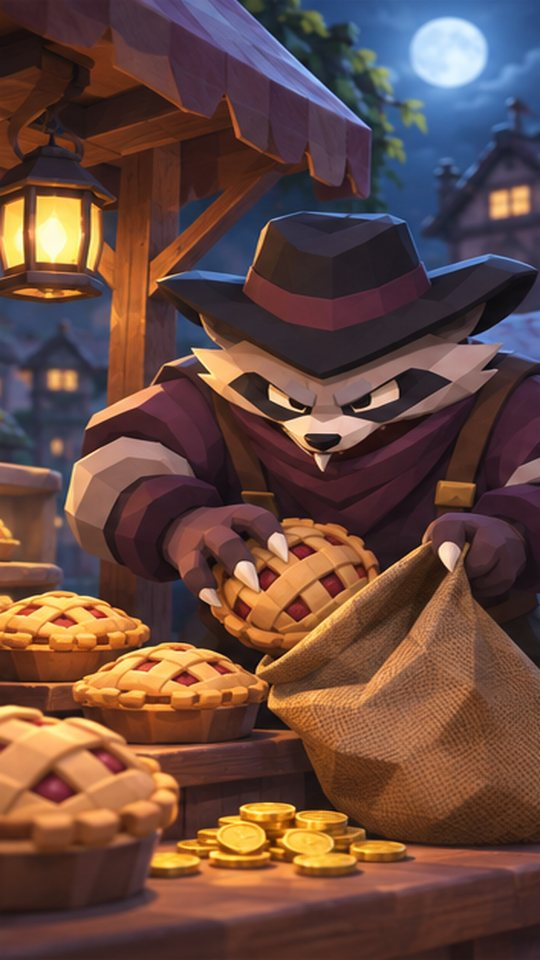
0,0–3,0Ночь. Енот сгребает пироги и монеты в мешок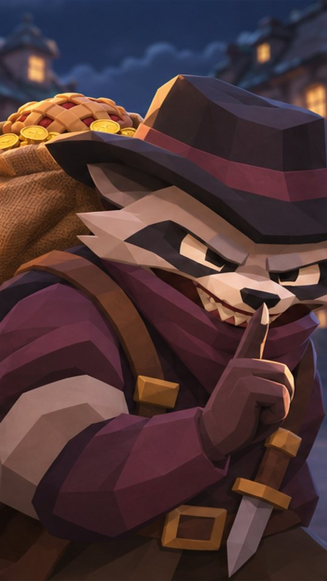
3,0–5,5Ухмыляется в камеру: «тсс»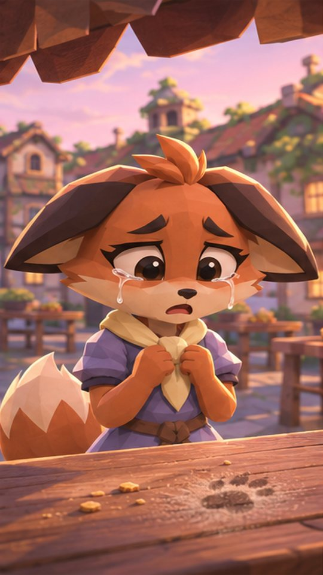
5,5–7,8Рассвет. Пустой прилавок, след лапы, слёзы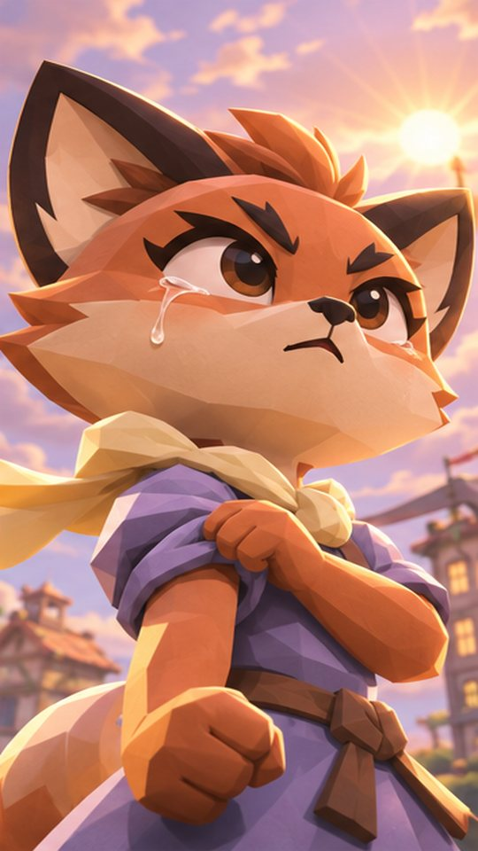
7,8–10,0Слёзы → решимость, закатывает рукава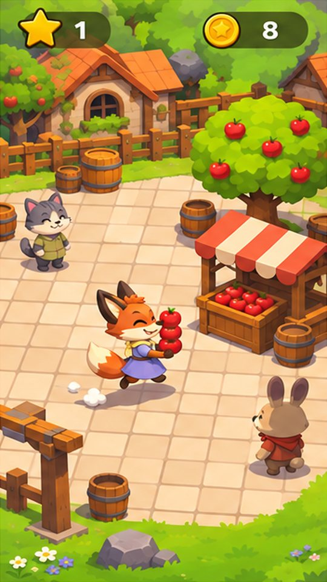
10–17Пустая площадь, одна яблоня, первая стопка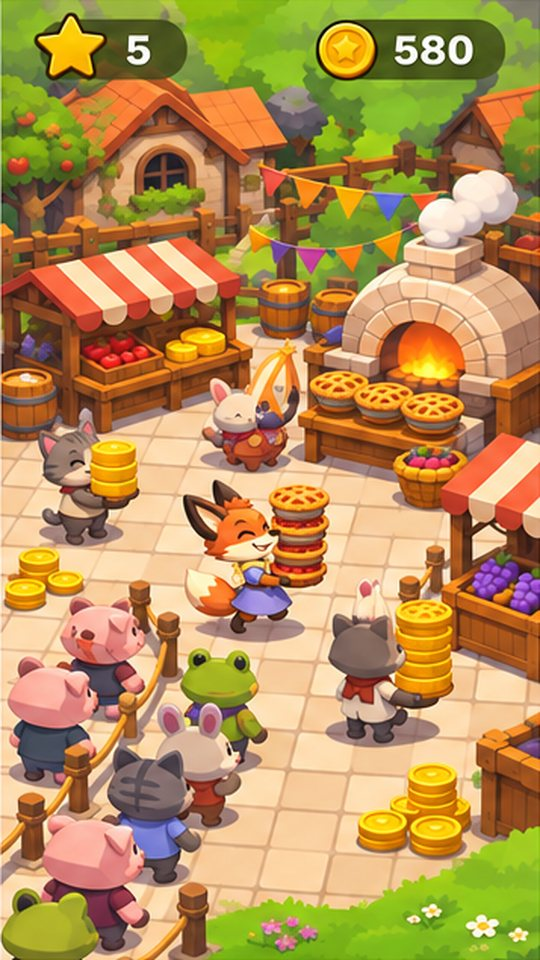
17–25Таймлапс роста: прилавки, печь, помощники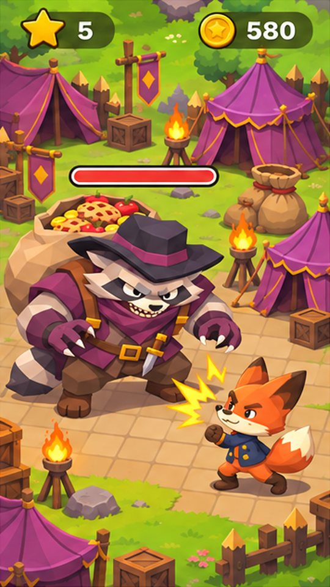
25–35Бой с енотом-главарём, победа, ключ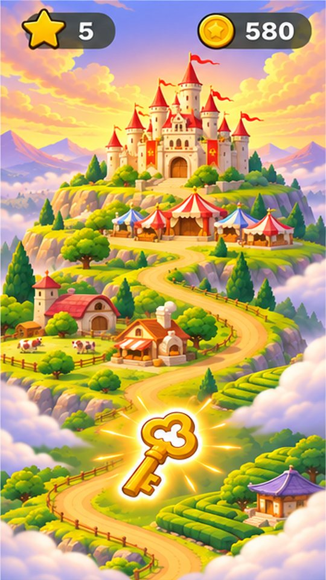
35–40Карта: облака расходятся, новый рынок| Время | Кадр | Источник | Надпись (RU / EN) | Звук |
|---|---|---|---|---|
| 0,0–3,0 | Ночь, луна. Лапа енота сметает пироги и монеты в мешок | Seedance | Ночью кто-то обчистил рынок… / Someone robbed the market… | Крадущееся пиццикато, шорох мешка |
| 3,0–5,5 | Енот крупно, мешок на плече, палец у губ | Seedance | — | Ехидный смешок |
| 5,5–7,8 | Рассвет. Лисичка у пустого прилавка, крошка и след лапы | Seedance | — | Грустный вздох, музыка обрывается |
| 7,8–10,0 | Решимость, закатывает рукава. Последний кадр = первый кадр игры | Seedance | Верни всё! / Get it all back! | Удар барабана, старт главной темы игры |
| 10–17 | Пустая площадь, одна яблоня: Лисичка набирает стопку, продаёт, первые монеты | Игра | С одной яблони… / From one apple tree… | Звуки игры: сбор, касса |
| 17–25 | Таймлапс: прилавки, печь пирогов, помощники, очередь, кучи монет. Склейки каждые 1,5 с, ускорение ×2–×4 | Игра, постановка | …до целого рынка / …to a whole market | Монеты, стройка |
| 25–35 | Главарь приземляется в лагерь, бой, победа, окно с ключом | Игра | Прогони банду! / Kick out the gang! | Музыка боя из игры, фанфары |
| 35–40 | Карта долины: облака расходятся над новым рынком. Логотип и кнопка | Игра + графика | Village Market · Играй бесплатно / Play free | Финальный аккорд |
Ключевые кадры 1080×1920 рисует GPT Image по этой раскадровке, героев берёт с арта игры. Seedance 2.5 оживляет их через image-to-video: три шота по 2,5–3 с, у последнего шота задан и первый, и последний кадр. Последним кадром ставим кадр из игры, поэтому ролик перетекает в геймплей без склейки.
У енота на арте нож. В хуке его прячем, чтобы не было вопросов к модерации. Бой с главарём записываем с подготовленного сохранения.
Лисичка несёт через рынок башню из пирогов выше крыш. Дальше игрок сам растит стопку от 4 до 16 и раскручивает рынок.
Почему сработает: стопка — главная механика жанра «носи и продавай» (так продают Burger Please и My Mini Mart). Её понятно за секунду без звука, и она честно продолжается в игре: стопку там правда растят улучшениями.
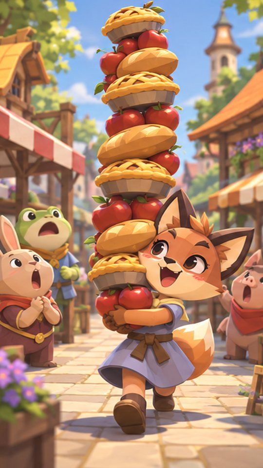
0,0–3,0Низкий ракурс: башня выше крыш, жители в шоке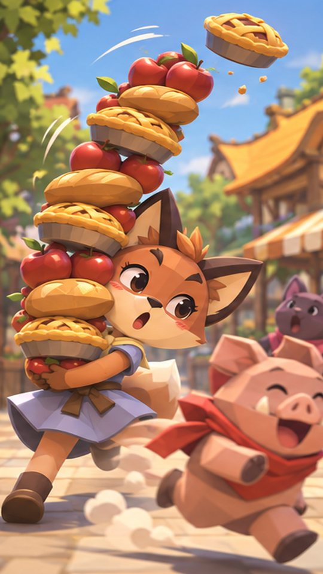
3,0–5,5Шатается, под ноги бежит поросёнок, пирог слетает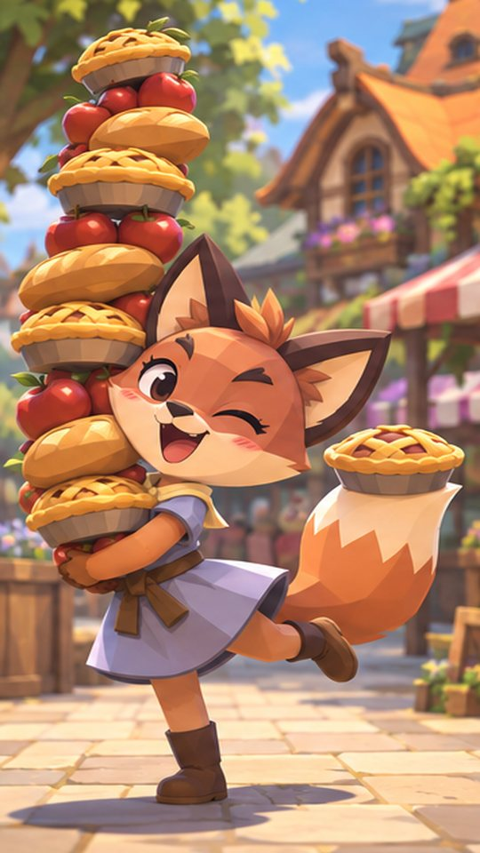
5,5–7,5Ловит пирог хвостом и подмигивает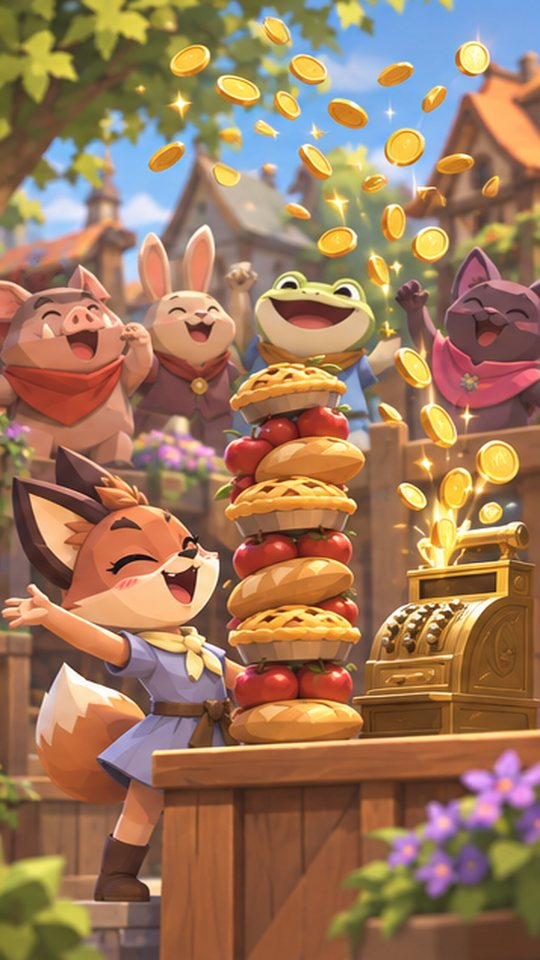
7,5–10,0Хлоп башню на прилавок — из кассы фонтан монет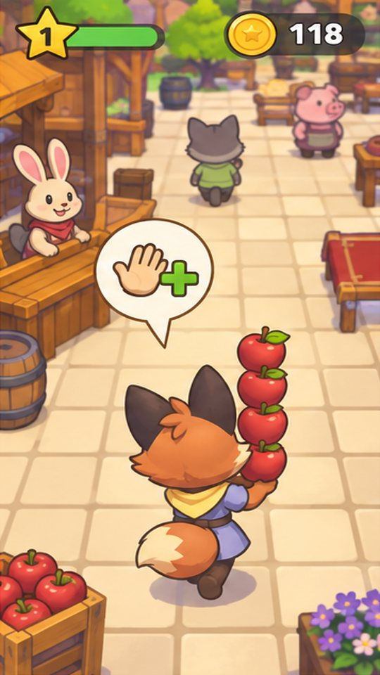
10–18Камера за спиной: стопка 4 → 8 → 12, улучшение «Руки»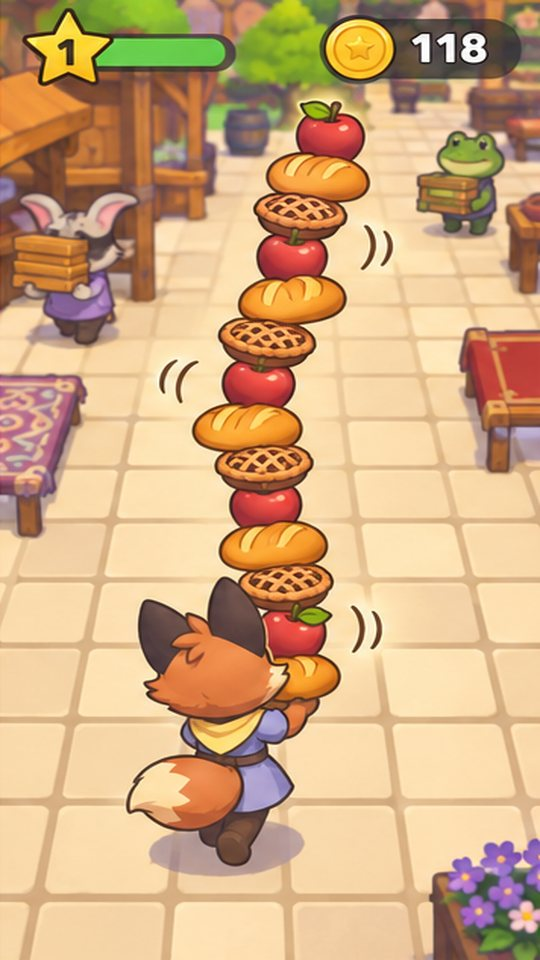
18–26Высокая стопка, товар дугой летит на полки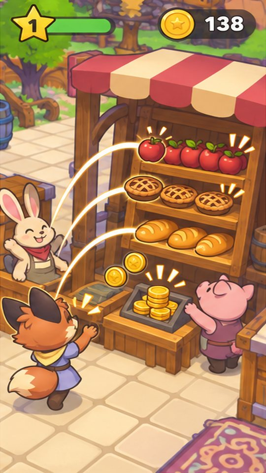
26–34Касса, кучки монет, помощники со своими стопками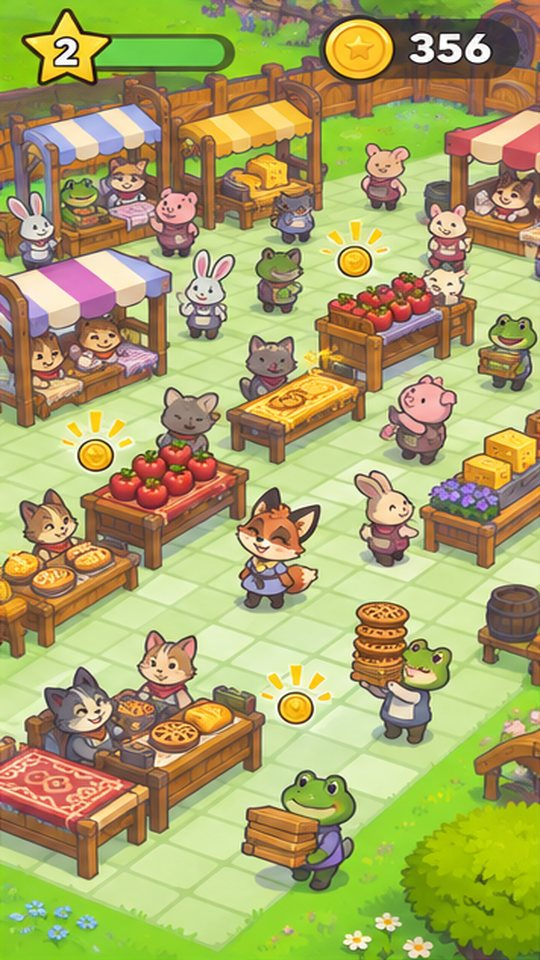
34–40Общий план большого рынка, логотип и кнопка| Время | Кадр | Источник | Надпись (RU / EN) | Звук |
|---|---|---|---|---|
| 0,0–3,0 | Низкий ракурс: Лисичка шагает с башней из яблок, пирогов и хлеба выше крыш, жители раскрыли рты | Seedance | Сколько ты унесёшь? / How much can you carry? | Скрип башни, «ооо» толпы |
| 3,0–5,5 | Башня шатается, поросёнок бежит под ноги, пирог слетает с верха | Seedance | — | Напряжённая пауза, свист |
| 5,5–7,5 | Ловит пирог хвостом на одной ноге, подмигивает | Seedance | — | «Дзынь», смешок |
| 7,5–10,0 | Ставит башню на прилавок — фонтан монет из кассы, аплодисменты. Последний кадр = кадр из игры | Seedance | Неси больше! / Carry more! | Касса, дождь монет |
| 10–18 | Своя камера за спиной: стопка растёт 4 → 8 → 12, вспышки улучшения «Руки» на доске | Игра, постановка | 4 → 8 → 12 → 16 | Подбор товара по нарастающей |
| 18–26 | Выкладка: товар дугой летит на полки, покупатели разбирают, касса, кучка монет, сбор | Игра | Продавай быстрее всех / Sell faster | Касса, монеты |
| 26–34 | Помощники носят свои стопки, общий план оживлённого рынка, ×2 прибыль | Игра, постановка | Найми помощников / Hire helpers | Главная тема |
| 34–40 | Лисичка с максимальной стопкой бежит на камеру, за ней рынок 4. Логотип и кнопка | Игра + графика | Village Market · Играй бесплатно / Play free | Финальный аккорд |
Тот же конвейер: GPT Image → Seedance image-to-video. Шоты 1–2 можно снять одним проходом reference-to-video на 5–6 с, если модель удержит башню. Если она начнёт «плыть», режем на короткие шоты.
В игре стопка максимум 16, в хуке — сотни: это гипербола, на AppLovin так принято. В геймплее показываем реальные 16. Для съёмки нужна прокачанная стопка: берём подготовленное сохранение.
Бесконечная очередь доводит Лисичку до паники. Игрок наводит порядок: второй прилавок, кассир, помощники.
Почему сработает: хуки «помоги / сделай лучше» дают высокий CTR в казуале, а механика настоящая: покупатели и правда злятся и уходят, если их долго не обслужить. Обходимся без выдуманных «98% не справятся».
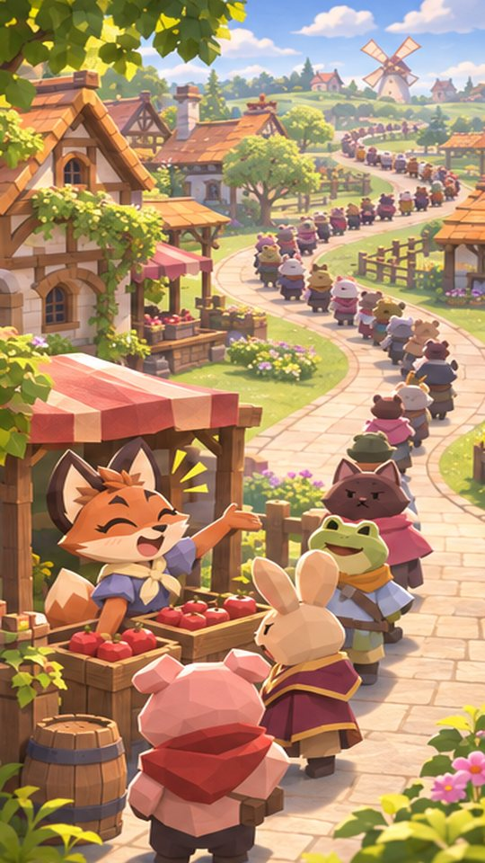
0,0–3,0Утро, улыбка, камера отъезжает: очередь до горизонта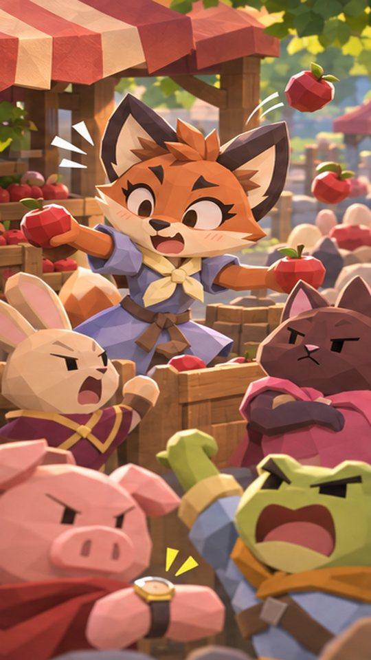
3,0–6,0Хаос: часы, крики, яблоки летят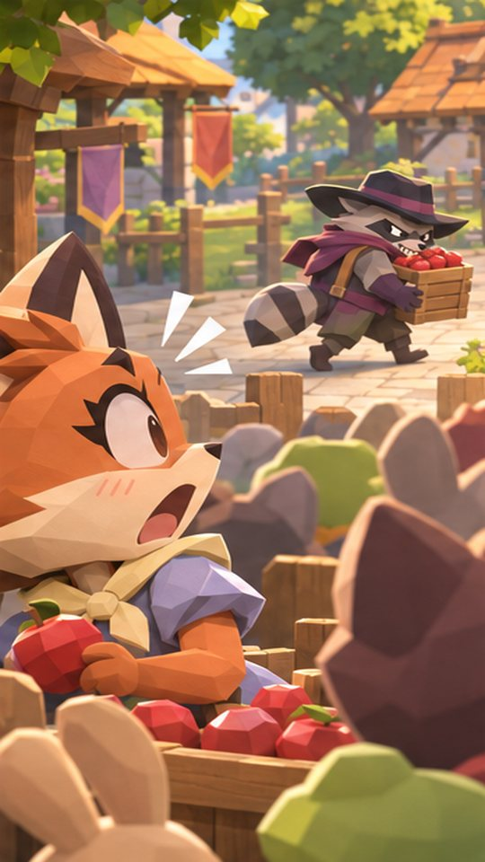
6,0–8,0А на фоне енот уносит ящик яблок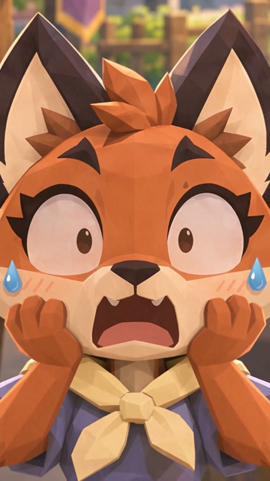
8,0–10,0Стоп-кадр: паника крупно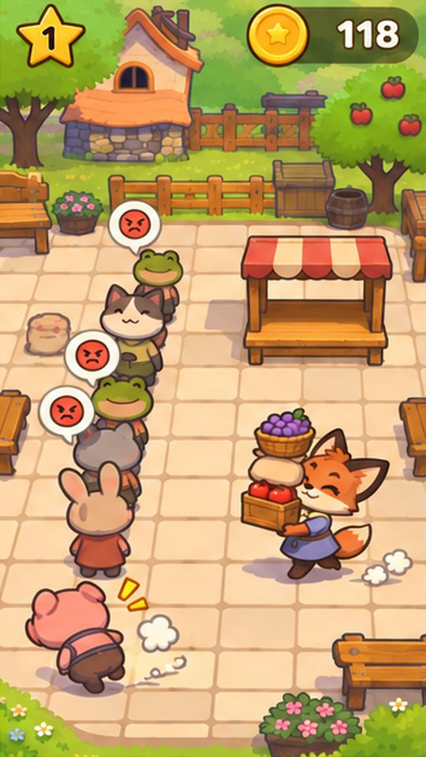
10–17Очередь у одного прилавка, злые смайлики, уходят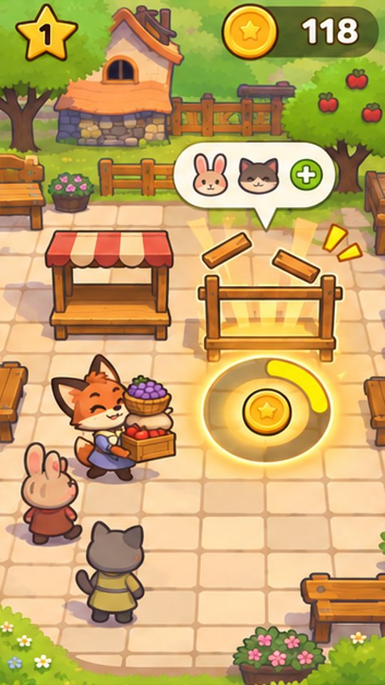
17–26Второй прилавок, кассир, помощники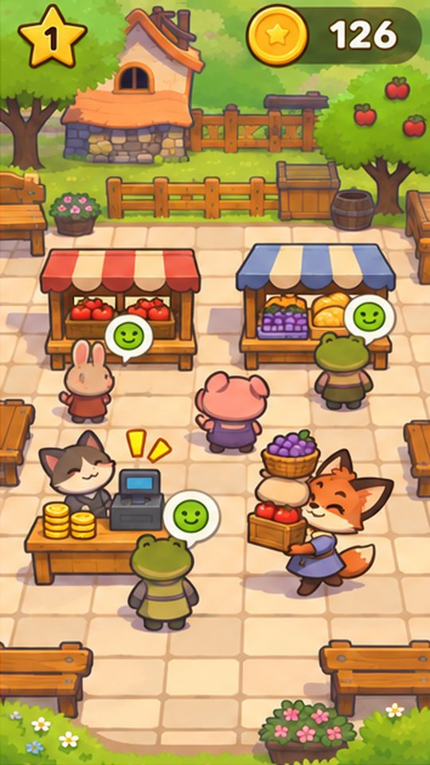
26–34Порядок: довольные покупатели, монеты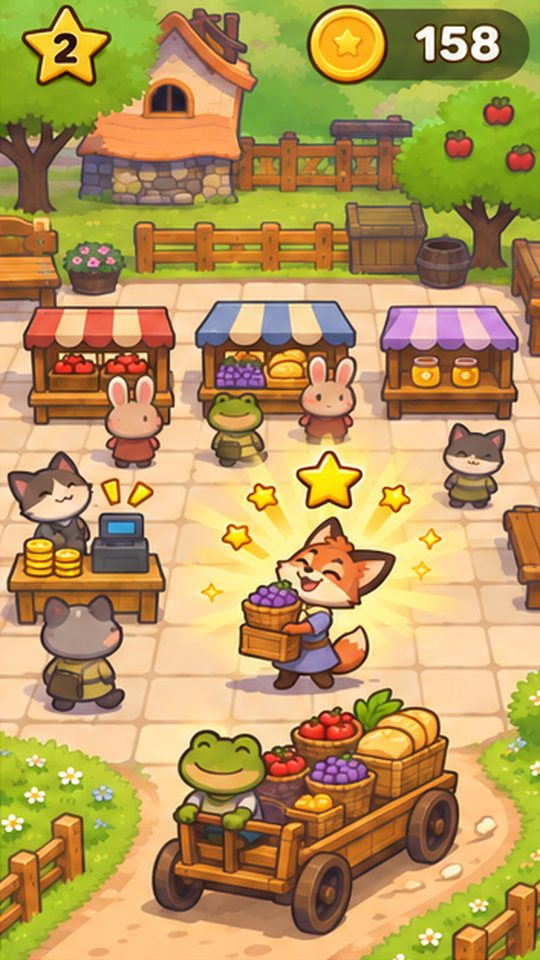
34–40Повозка с заказом, новый уровень, логотип| Время | Кадр | Источник | Надпись (RU / EN) | Звук |
|---|---|---|---|---|
| 0,0–3,0 | Утро, Лисичка улыбается за прилавком. Камера отъезжает: очередь зверят тянется до горизонта | Seedance | Открыла рынок… / Opened my market… | Весёлая мелодия, нарастающий гул |
| 3,0–6,0 | Хаос: свин стучит по часам, лягушка кричит, кошка скрестила руки, яблоки летают | Seedance | …и началось / …and then this | Гомон толпы, музыка сбивается |
| 6,0–8,0 | На фоне енот тихо уносит ящик яблок, Лисичка замечает | Seedance | — | Крадущиеся шаги |
| 8,0–10,0 | Стоп-кадр паники крупным планом | Seedance | Справишься лучше? / Can you do better? | Скрип пластинки, тишина |
| 10–17 | Длинная очередь у одного прилавка, пустая полка, злые смайлики, покупатель уходит | Игра, постановка | Покупатели уходят! / Customers are leaving! | Недовольные звуки игры |
| 17–26 | Круг стройки → второй прилавок, найм кассира и помощников, очередь тает | Игра | Строй и нанимай / Build and hire | Стройка, найм |
| 26–34 | Всё работает: довольные смайлики, касса, монеты, повозка уезжает с заказом | Игра | Вот это рынок! / Now that’s a market! | Главная тема, касса |
| 34–40 | Новый уровень, общий план, логотип и кнопка | Игра + графика | Village Market · Играй бесплатно / Play free | Финальный аккорд |
Шот 1 — один кадр с отъездом камеры (image-to-video: первый кадр — Лисичка крупно, последний — очередь до горизонта). Шоты 2–3 через reference-to-video с героями. Стоп-кадр делаем при монтаже, без красного круга.
Толпа в Seedance может разъехаться по стилю, поэтому даём до 8 референсов жителей. Злых покупателей в игре проще поставить вручную, чем ждать: делаем постановку, как StoreStage Алёны для скриншотов стора.
| A · Ограбление | B · Башня | C · Очередь | |
|---|---|---|---|
| Чем цепляет | Злодей и обида | Масштаб и «вау» | Хаос и вызов игроку |
| Без звука понятно | Да, через лица | Да, лучше всех | Да |
| Связь хука с игрой | Бой с главарём в игре | Стопка в игре | Очередь и найм в игре |
| Сложность Seedance | Средняя: 2 героя | Высокая: башня должна держать форму | Высокая: толпа |
| Что подготовить в игре | Сохранение с боем, карта | Прокачанная стопка, рынок 4 | Постановка очереди |
| Seedance, оценка | ≈ $3–4 | ≈ $4–5 | ≈ $4–5 |
Оценка: 10 с финала в 1080p плюс 2–3 черновика в 480p (режим draft) на каждый шот, по прайсу Seedance 2.5 на Atlas ($0.134 за секунду). Все три хука вместе — примерно $10–15.
Утверждение. Выбираешь сценарии и пишешь правки: что поменять в кадре, в надписях, в порядке.
Ключевые кадры хука. GPT Image рисует 3–4 кадра на хук в 1080×1920. Героев берём с арта игры, чтобы Лисичка и енот были те же.
Seedance 2.5 через Atlas. Image-to-video от ключевых кадров. Сначала черновики 480p, потом финал 1080p. Звук Seedance берём там, где он к месту.
Геймплей. Пишем из версии 1.0.0 в 1080×1920. Готовим сохранения под нужные сцены, расставляем покупателей и ставим свои камеры: за спиной, низкий ракурс, общий план. Интерфейс игры оставляем: зритель видит настоящую игру.
Монтаж. Надписи шрифтом игры, музыка и звуки из игры, громкость −14 LUFS. Каждый ролик в двух версиях: RU и EN.
Сдача. MP4 H.264 1080×1920 по каждому сценарию и языку. Плюс end card для AppLovin (картинка 1080×1920 и GIF), её AppLovin показывает после видео.
25.11: все три сценария утверждены. Хуки первой версии сгенерированы. Ролик A смонтирован (RU) и ждёт ревью, затем B и C.